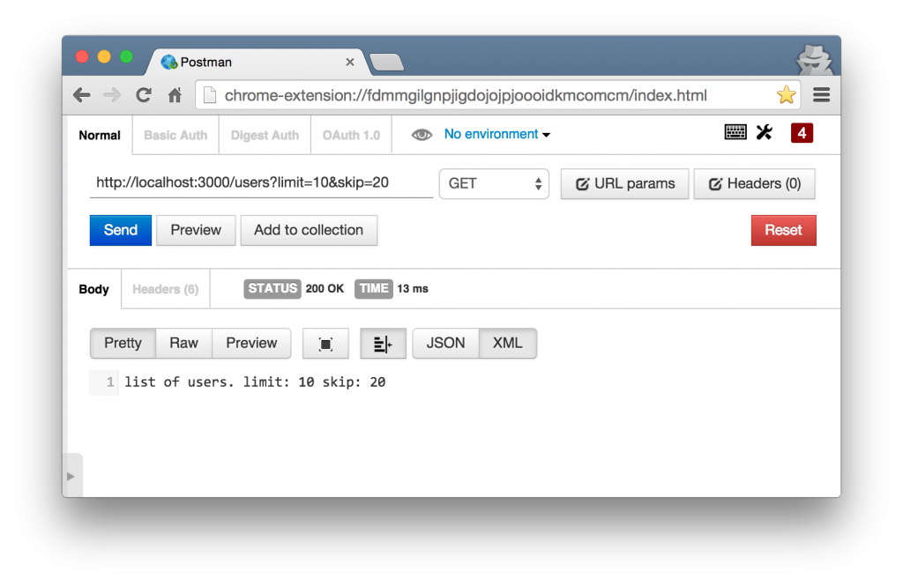

Express.js 시작하기
Express.js란?
익스프레스(Express.js)는 노드(NodeJS) 상에서 동작하는 웹 개발 프레임웍입니다. 이외에도 Hapi.js, Koa.js 등 다양한 웹프레임웍이 있지만 현재까지 가장 많이 사용하는 것이 바로 익스프레스 엔진입니다.
익스프레스는 가볍고 유연하게 웹 프레임웍을 구성할 수 있는 장점이 있습니다. 이것은 미들웨어(Middleware) 구조 때문에 가능한 것입니다. 자바스크립트 코드로 작성된 다양한 기능의 미들웨어는 개발자가 필요한 것만 선택하여 익스프레스와 결합해 사용할 수 있습니다. 본 글에서는 익스프레스 설치와 기본구조에 대해 알아보고 웹서버 개발에 필요한 기초 사용법에 대해 알아보겠습니다.
설치
익스프레스는 노드 모듈중 하나입니다. 따라서 노드 설치를 선행해야합니다. 노드 홈페이지에서 직접 설치 파일을 다운로드하여 설치할 수 있습니다. 설치후 아래 명령어로 노드 설치 유무를 확인하세요
$ node --version
$ npm --version
node는 노드 실행을 위한 명령어고 npm은 노드 모듈설치를 위한 명령어 입니다. 노드 모듈 중 하나인
익스프레스 설치를 위해 npm 명령어를 사용합니다.
$ npm install express -g
npm 명령어 사용시 -g 옵션을 추가하면 글로벌(global)로 모듈을 설치한다는 의미인데, 리눅스/유닉스
계열의 경우 루트(root) 권한으로 설치한다는 의미와 같습니다. 이렇게 글로벌 모듈로 설치하면 커맨드라인
창에서 express 명령어로 익스프레스 모듈을 설치할 수 있습니다.
$ express my-app
위 명령어 실행결과 my-app 폴더가 생성되고 익스프레스 모듈과 함께 서버 구동에 필요한 각종 파일들이 폴더 하위에 자동으로 생성됩니다.
구조
express 명령어로 자동 생성된 my-app 폴더 구조를 살펴봅시다.
/myapp
⌊ /bin
⌊ www
⌊ /public
⌊ /images
⌊ /javascripts
⌊ /stylesheets
⌊ /routes
⌊ index.js
⌊ users.js
⌊ /views
⌊ index.jade
⌊ app.js
⌊ package.json
package.json: 노드에서는 package.json 파일에 프로그램 이름, 버전 등 노드 프로그램의 정보를 기술합니다. 또한 필요에 따라 다양한 모듈을 함께 사용하는데 이러한 모듈들의 목록을 package.json에 나열합니다. NPM은 이 정보를 참고하여 필요한 모듈을 모두 설치할 수 있는 것입니다.
bin/www: 서버 구동을 위한 코드가 기록되어 있습니다. 익스프레스 서버설정 코드가 기록된 app.js 파일을 가져와 노드의 HTTP 객체와 연동하는 작업이 이뤄집니다.
app.js: bin/www 에서 사용되는 이 파일은 익스프레스 설정 파일이 담겨있는 핵심 코드입니다. 주요 설정 코드를 살펴봅니다.
- morgan: 클라이언트의 HTTP 요청 정보를 로깅하기 위한 모듈
- body-parser: 클라이언트의 HTTP 요청 중 POST 요청의 바디 데이터에 접근하기 위한 모듈
- cookie-parser: 접속한 클라이언트의 쿠키 정보에 접근하기 위한 모듈
- express.static(): 정적 파일 호스팅을 위한 경로 설정
- app.use('/', routes): 라우팅 설정. 세부 라우팅은 /routes 폴더에 구현됨
/routes: 라우팅을 위한 폴더입니다. 라우팅 리소스 별로 모듈을 만들어 라우팅 로직을 각 파일에 구현 합니다. 그 중 /routes/index.js 파일을 살펴 봅시다.
// routes/index.js
var express = require('express');
var router = express.Router();
router.get('/', function(req, res, next) {
res.render('index', { title: 'Express' });
});
module.exports = router;
express.Router() 객체를 이용해 라우팅 로직을 설정 합니다. 라우트 객체 router는 get()
함수를 이용해 / URI로 호출되었을 경우 어떤 로직을 수행하도록 합니다. 두번째 파라매터인 콜백함수는
세개의 파라메터를 갖는데 다음과 같습니다.
req: 클라이언트 요청정보를 담은 객체res: 요청한 클라이어트로 응답을 위한 객체next: 다음 로직 수행을 위한 함수명
위 코드는 클라인언트로부터 GET / 호출이 있을 경우, 뭔가를 렌더링하라는 의미 정도로 이해하면 됩니다.
자세한 라우팅은 별도 섹션에서 설명할 것입니다.
/views/index.jade: 템플릿 파일일 제이드(Jade) 파일입니다. 이 파일을 제이드 엔진을 통해
HTML 코드로 변환됩니다. 위에서 설정한 라우팅 로직 중 redner()함수에서 파라매터로 이 파일을
사용합니다. 제이드 파일도 마지막 섹션에서 자세히 설명할 것입니다.
/public: 정적 파일을 위한 폴더로서 자바스크립트 파일, 이미지 파일, 스타일시트 등을 포함합니다. 브라우져에 로딩된 HTML파일에서 해당 파일을 호출하면 내려주는 역할을 합니다.
구동
익스프레스를 설치했고 전체 폴더 구조를 살펴보았으니 프로그램을 구동해 보겠습니다. 위에서도 설명했듯이 노드는 NPM을 통해 필요한 모듈을 설치하고 프로그램을 구동합니다.
필요한 모듈 설치:
$ npm install
프로그램 구동:
$ npm start
익스프레스는 별도 설정이 없다면 기본적으로 3000번 포트를 사용합니다. 웹 브라우져를 열고
http://localhost:3000으로 접속합니다. 아래 화면을 확인하면 익스프레스를 제대로 설치한 것입니다.

라우팅
크라이언트의 요청을 위한 URL 스키마를 라우트라고 합니다. 이미 설명한 GET /을 예로 들면 클라이언트가
GET 메소를 이용해 / URI에 해당하는 서버자원을 요청한다는 의미로 해석합니다. 만약 POST 메소드를
사용한다면 서버에 자원을 생성하는 요청입니다. 이렇게 URL 스키마는 서버와 클라이언트간의 통신 인터페이스를
제공해 주는 역할을 합니다.
express 커맨드로 생성한 코드 중 상위 폴더의 app.js 파일 일부를 살펴봅시다.
// app.js
// 미리 구현한 라우팅 모듈을 가져온다.
var routes = require('./routes/index');
var users = require('./routes/users');
// 중략
// URL에 따라 라우팅 모듈을 설정한다.
app.use('/', routes);
app.use('/users', users);
/routes 폴더는 라우팅을 위한 폴더로 리소스 단위로 모듈 파일을 구현합니다. user 자원에 대한 라우팅 로직을 구현한 /routes/users.js 파일을 살펴봅시다.
// routes/users.js
var express = require('express');
var router = express.Router();
// GET users listing.
router.get('/', function(req, res, next) {
res.send('respond with a resource');
});
라우터 객체 router의 get() 함수를 이용해 GET /users 프로토콜에 대한 로직을 구현했습니다.
프로토콜의 메소드에 따라 라우터 객체의 함수를 사용할 수 있습니다.
- GET: router.get()
- POST: router.post()
- PUT: router.put()
- DELETE: router.delete()
get함수의 첫번째 파라매터에 /만 설정한 이유는 app.js 파일에 있습니다. 이미 app.js에 있는
app.use('/users', users) 코드로 라우팅이 설정되어 있기 때문에 users.js 모듈에서는 /
만으로 라우팅 설정을 할 수 있습니다.
두번째 파라매터는 콜백으로 설정하는데 URL에 접속했을때 실행되는
함수입니다. 함수의 첫번째 파라매터 req는 클라이언트 응답에 대한 정보를 담는 객체입니다. 이 객체는
req.params, req.param(), req.body 등의 함수 혹은 객체를 이용하여 클라이언트로 부터
요청하는 데이터에 접근 할 수 있습니다. 만약 유저 전체 데이터가 아니라 페이지네이션을 위해 일부 데이터만
요청하는 경우 GET /users?limit=10&skip=20 으로 요청할 수 있습니다. 이 경우 아래와 같이
파라매터 값에 접근할 수 있습니다.
app.get('/', function (req, res) {
res.send('list of users. limit: ' + req.param('limit') +
'skip: ' + req.param('skip'));
});

res 파라매터는 클라이언트로 응답을 위한 객체입니다. res.send() 함수를 이용해 문자열로 응답할 수
있습니다. 이 외에도 응답을 위한 몇 가지 함수를 더 사용할 수 있습니다.
res.send(): 문자열로 응답res.json(): 제이슨(Json) 객체로 응답res.render(): 제이드 템플릿을 렌더링res.sendfile(): 파일 다운로드
템플릿
마지막으로 템플릿에 대해 알아봅시다. 익스프레스에서는 템플릿 엔진을 이용해 웹페이지를 생성하는데 제이드 (Jade)가 대표적입니다. package.json 파일을 다시 확인해 봅시다.
{
"name": "myapp",
"version": "0.0.0",
"private": true,
"scripts": {
"start": "node ./bin/www"
},
"dependencies": {
"body-parser": "~1.12.4",
"cookie-parser": "~1.3.5",
"debug": "~2.2.0",
"express": "~4.12.4",
"jade": "~1.9.2",
"morgan": "~1.5.3",
"serve-favicon": "~2.2.1"
}
}
아래에서 세번째 줄에 보면 jade 모듈을 사용한다는 것을 알수 있습니다. app.js에서는 이 제이드 모듈을 익스프레스와 연동하는 작업을 합니다.
// app.js
app.set('views', path.join(__dirname, 'views'));
app.set('view engine', 'jade');
먼저 뷰 폴더의 경로를 설정합니다. 제이드 파일을 포함하는 이 폴더를 제이드 엔진에서 참고하기 위해서 입니다. 그 다음 뷰 엔진을 제이드로 설정합니다. 그러면 /views 폴더에 있는 제이드 파일을 렌더링할 수 있는 준비가 완료 된 것입니다. 이렇게 설정된 템플릿은 어디에서 사용될까요? 그렇습니다. 이미 설정한 라우팅 로직에서 사용합니다. /routes/index.js 파일을 다시 살펴 봅시다.
// /routes/index.js
var express = require('express');
var router = express.Router();
// GET home page.
router.get('/', function(req, res, next) {
res.render('index', { title: 'Express' });
});
module.exports = router;
라우트 객체를 이용해 라우팅을 설정한뒤 콜백 함수에서 res.render()로 클라이언트 요청에 응답하는
코드 입니다. 이 함수의 프로토타입은 다음과 같습니다.
render(view, locals)
view는 렌더링할 템플릿 파일명입니다. 'index'로 설정한 것은 /views/index.jade를 렌더링한다는
의미입니다. locals는 템플릿 파일에 주입할 객체입니다. {title: 'Express'} 객체를 두번째
파라매터로 설정한 경우 /views/index.jade에서는 이 객체를 이용해 페이지 정보를 구성합니다. 템플릿
파일을 살펴 봅시다.
//- /views/index.jade
extends layout
block content
h1= title
p Welcome to #{title}
제이드 파일을 작성하기 위해서는 몇가지 문법을 숙지해야 합니다. 첫번째 줄의 extends 키워드는 템플릿을
상속한다는 의미입니다. layout.jade 템플릿을 그대로 사용하면서 필요한 부분만 추가한다는 뜻입니다.
block 키워드는 상속한 부모 템플릿, 그러니깐 layout.jade에 선언한 특정 영역을 대체 한다는
의미입니다. /views/layout.jade 파일을 잠깐 살펴봅시다.
//- /views/layout.jade
doctype html
html
head
title= title
link(rel='stylesheet', href='/stylesheets/style.css')
body
block content
기본적인 html, head, title, link, body 태그는 각 각 <html></html>, <head></head>,
<title></title>, <link>, <body></body> 태그로 변경될 것입니다. 마지막의
block centent 부분은 이것을 상속한 부분에서 구현할 코드로 대체 됩니다.
다시 /views/index.jade 파일로 돌아와 상속한 템플릿을 구현한 코드를 살펴봅시다. block content
가 포함하는 코드가 이를 대체합니다.
//- /views/index.jade
extends layout
block content
h1= title
p Welcome to #{title}
render() 함수에서 두번째 파라매터로 주입한 locals 객체는 = 변수명으로 접근할수 있습니다.
h1= title은 <h1>Express</h1>으로 변환됩니다. locals 객체를 문자열 내에서 사용할 경우는
#{변수명}으로 접근합니다. p Welcome to #{title}은 <p>Welcome to Express</p>로
변환 됩니다.
이외에도 include, mixin 등 제이드만의 문법은 다양합니다. 공식 홈페이지에서 확인할 수 있습니다.
마치며
익스프레스는 이외에도 CSS 전처기를 위한 모듈(Stylus, Less등), 사용자 입력을 위한 폼(From), 데이터 저장을 위한 쿠키(Cookie)나 세션(Session)등 다양한 기능을 지원합니다. 또한 백엔드 서버구현 시 영구적인 데이터 저장을 위한 데이터베이스 모듈(Mysql, Mongodb)도 거의 대부분 지원하고 있습니다.
소스코드: https://github.com/jeonghwan-kim/express-kisa-getstarted